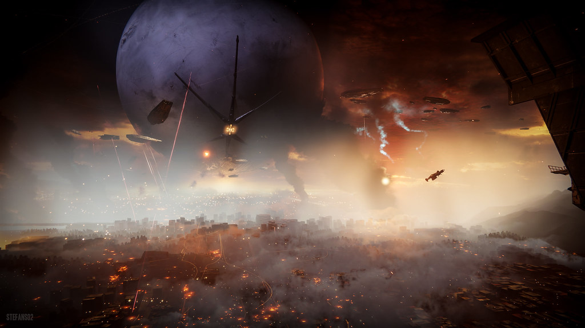
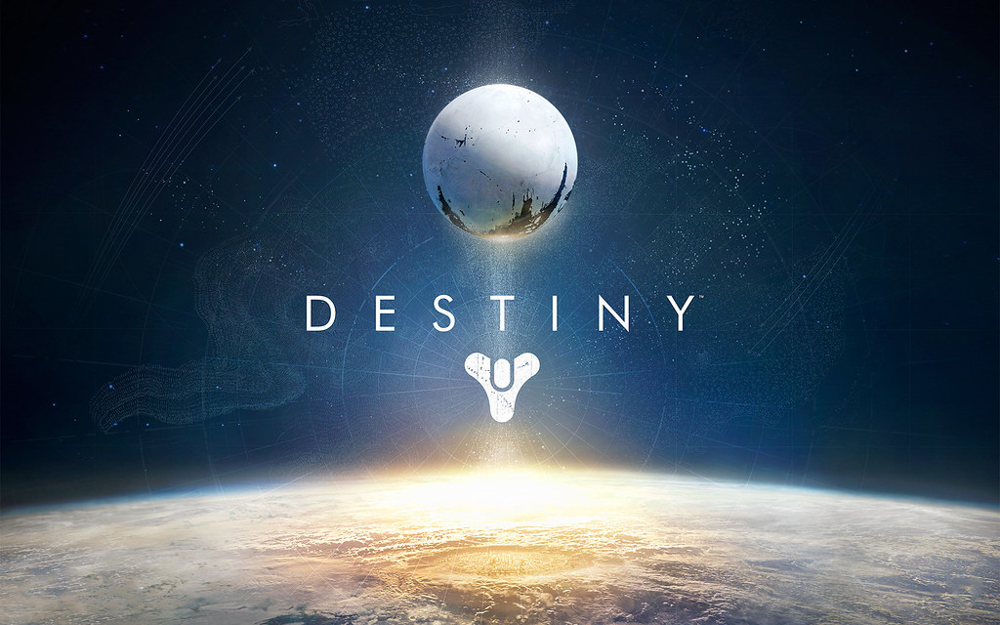
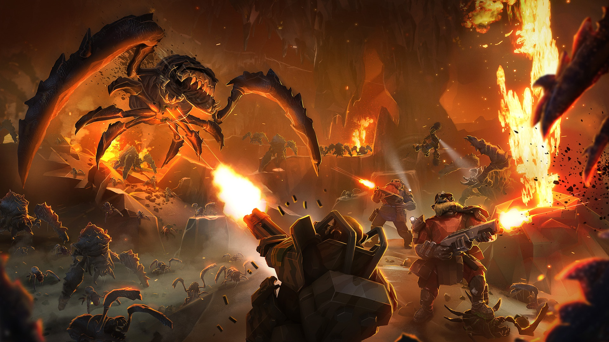
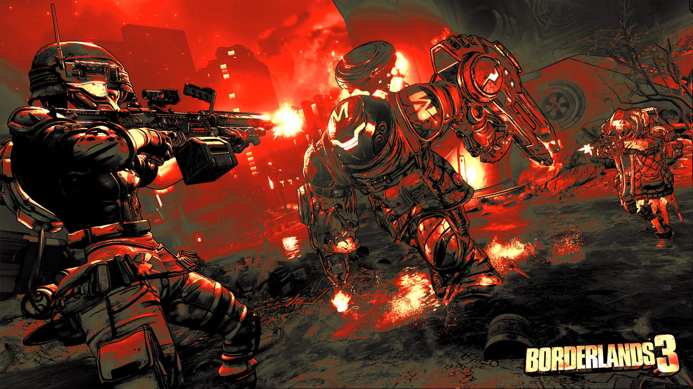

Looter shooter játékok
A loot and shooter játékok, azaz grindolós játékok lényege minél jobb karakter és csapatfelállítással egyre nagyobb és erősebb ellenfelek legyőzése a zsákmányok érdekében. Így erősödik a karakter hogy mégerősebb ellenfeleket győzhessen le mégjobb zsákmányhoz való hozzáférésért.
Destiny 2
Új season

A Destiny 2-nek új szezonja érkezett, amely a Season of Wish. Ez a Final Shape kiegészítőjének való előkészülésről szól. Ebben a szezonban a figyelem az Ahamkara, azaz a Kívánságsárkányok felé fordul, és segítségért fordulnak hozzánk. Ám cserébe azt kérik, hogy szerezzük meg az összes elveszett tojásukat, hogy újraéleszthessék hadakozó fajukat. Az egyik új 3 játékos tevékenység a Dreaming City alatt elterülő hatalmas alvilágban zajlik. A cél az, hogy kikerüld a csapdákat, és legyőzd a hatalmas ellenségeket, hogy megszerezzétek Riven, az egyik Ahamkara utolsó, megszennyezetlen tojásait. Cserébe Riven a tizenötödik kívánságot teljesíti.

A jelenlegi expansion
A Lightfall Destiny 2 legújabb expansion-je. Itt meglátogatjuk a Neptunuszt annak érdekében, hogy Calust, az egyik főgonoszt megállítsuk és megmentsük Neptunusz lakosait. Küldetésünk közben viszont rábukkanunk egy új, ez előtt nem ismert erőre, ami a valóságot összetartó szövet. Utunk során elsajátítjuk ezt az erőt, hogy legyőzhessük vele Calust.

Az előző expansion
A Witch Queen volt az előző expansion, ami egy hatalmas siker volt. Sok új tevékenységet és egészséges változtatásokat hozott be a játékba, emellett érdekes módon folytatta a történetet. Kifejezetten pozitívan fogadta a játékosok nagysága. Emellett itt fedték fel a játék új főellenségét, a Witness-t.
Warframe

A Warframe egy ingyenesen játszható, akció-orientált sci-fi szerepjáték (RPG), amit a Digital
Extremes fejlesztett és kiadott. A játék jövőbeli időben játszódik, ahol a játékosok a Tenno nevű
harcosokként küzdenek különböző frakciók ellen, miközben különböző bolygókon és űrállomásokon kalandoznak.
A Tenno-k bio-mechanikus harcosok, akiket évszázadokig vagy akár évezredekig is alszanak, majd felébresztik
őket, hogy harcoljanak az univerzum fenyegetéseivel szemben.
A játékosok testre szabhatják saját Tenno-jukat különböző fegyverekkel, páncélzattal és képességekkel,
amelyeket a játék során fejleszthetnek és javíthatnak.
A játék középpontjában a kooperatív többjátékos mód áll, ahol a játékosok csapatot alkotva együtt harcolnak
a küldetéseken és az életveszélyes ellenfelek ellen.
Emellett a játéknak van egy nyílt világú része is, amely lehetővé teszi a játékosoknak, hogy szabadon
felfedezzék a különböző bolygókat, részt vegyenek csatákban, és kereskedjenek más játékosokkal.
A Warframe egy dinamikus és folyamatosan fejlődő játék, amely rendszeresen frissül új tartalommal,
küldetésekkel és funkciókkal. A játéknak hatalmas és elkötelezett rajongótábora van, és számos díjat és
elismerést nyert a megjelenése óta.
Deep Rock Galactic

A Deep Rock Galactic egy ingyenesen játszható, akció-orientált sci-fi túlélőjáték, amelyet a
Ghost Ship Games fejlesztett és kiadott.
A játék egy távoli jövőben játszódik, ahol a játékosok a sziklakutatók bőrébe bújva merülnek el az űr mélyén
rejtőző veszélyekkel teli
barlangrendszerek felfedezésében és felderítésében. A sziklakutatók egy különleges cég alkalmazottai, akiket
arra képeztek ki,
hogy túléljenek a legveszélyesebb körülmények között is, és szerezzenek be értékes ásványokat és
nyersanyagokat a galaktikus kereskedelemhez.
A játékosok szabadon választhatnak a különböző karakterosztályok közül, és testre szabhatják felszerelésüket
és képességeiket annak érdekében,
hogy hatékonyan vegyék fel a harcot az űr barlangjaiban élő veszélyekkel.
A játék legfőbb elemei közé
tartozik a kooperatív többjátékos mód,
ahol a játékosok csapatot alkotva dolgoznak együtt a túlélésért és a gazdagság megszerzéséért. A Deep Rock
Galactic folyamatosan fejlődő játék,
amely rendszeresen új tartalmakkal és frissítésekkel szolgál a játékosoknak, hogy mindig új kihívásokkal és
kalandokkal szembesüljenek az űr titokzatos mélységeiben.
Unturned

Az Unturned egy túlélőjáték, amelyben a játékosok egy poszt-apokaliptikus világban próbálnak
túlélni és újraépíteni a civilizációt. Az alábbiakban néhány főbb jellemzőjét emeljük ki:
Tartsd távol magad a zombiktól: A játékosoknak meg kell őrizniük emberi állapotukat és el kell kerülniük a
zombikká válást.
Válaszd a taktikát: Lehetőség van akár a frontális támadásra, akár az alattomosabb módszerek alkalmazására a
túlélés érdekében.
Szembenézés a természettel: A játékosoknak nem csak a zombikkal kell megküzdeniük, hanem a természet
kihívásaival is. Gyűjts vad gyümölcsöket, vadászhass állatokra és halássz a túlélés érdekében.
Szembeszállás más játékosokkal: Barátokat szerezhetünk vagy ellenfeleket találhatunk online.
Segíts a közösség újjáépítésében: Akár offline, akár egyedül játszol, rengeteg teendő vár rád.
Erősítsd meg erődödet: Építs erődöt, tárolj és védekezz a zombikkal szemben.
Bordelands 3

A Borderlands 3 egy akciódús lövöldözős RPG, amelyet a Gearbox Software fejlesztett és kiadott.
A játék a Borderlands sorozat legújabb része, amelyben ismét visszatérünk a Pandora világába és új kalandok
várnak ránk. Néhány főbb jellemzője:
Felfedezés és akció: Merülj el a Borderlands világában és fedezd fel az új területeket, dungeonokat és
karaktereket. Légy részese az akciódús lövöldözéseknek és kihívásoknak.
Különleges osztályok és képességek: Válassz a különböző osztályok közül, mindegyiknek saját egyedi
képességeivel és felszereléseivel. Fejleszd a karakteredet és alkalmazd a legjobb stratégiát a harcokban.
Kooperatív módban játszható: Csapatban dolgozz együtt barátaiddal és más játékosokkal, hogy legyőzzétek az
ellenfeleket és teljesítsétek a küldetéseket.
Változatos fegyverek és loot: Gyűjtsd össze a legjobb fegyvereket és felszereléseket, hogy még erősebb
legyél a harcokban. A Borderlands 3 híres a változatos és egyedi fegyverekről, amelyek számos különleges
képességgel rendelkeznek.
Dinamikus világ és történet: Kövesd nyomon a fő történetet és fedezd fel a mellékküldetéseket és rejtett
titkokat a világban. A Borderlands 3 egy dinamikus és élénk világot kínál, amely folyamatosan változik és
fejlődik a játékosok döntései alapján.
Tom Clancy's The Division 2

A Division 2 egy online, akció-orientált lövöldözős RPG élmény, ahol a felfedezés és a játékos-fejlődés
alapvető fontosságúak. A játékosok egy elit ügynökcsoport tagjaként lépnek be a poszt-pandémiás Washington
DC-be, hogy helyreállítsák az rendet és megakadályozzák a város összeomlását.
A Division 2 a következőket kínálja:
Szabadítsd fel Washington DC-t: Ments meg egy országot a teljes összeomlás szélén álló állapotában, miközben
felfedezed egy nyitott, dinamikus és ellenséges világát.
Erősebb a csapatoddal: Specializálódj és harcolj együtt barátaiddal online kooperatív módban vagy mások
ellen versenyképes PVP módban.
Műfaj-definiáló endgame: Válassz egyedi osztály specializációt, hogy a legnehezebb kihívásokkal szembeszállj
barátaiddal.
| Top 5 legjátszottabb looter shooter játékok | ||||
|---|---|---|---|---|
| Warframe | Destiny 2 |